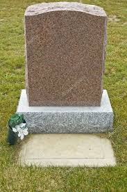

Rua Para - Tancredo Neves, Manaus - AM – Brasil
Mobile/WhatsApp: +55 92 9.9202-0844
Nascimento: 02 de outubro de 2000
Telefone: +55 92 9.8813-6155
E-mail: Weslen.v.costa@gmail.com
Qualificações Acadêmicas
• Ensino Médio
FMM – Fundação Matias Machiline
Manaus, AM – Brasil
2017 – Até o presente momento
• Ensino Fundamental
JRS – Escola Jorge Rezende Sobrinho
Manaus, AM – Brasil
2006 – 2016
Histórico de Experiência Acadêmica
- Componente da equipe de Robótica JRS
JRS – Escola Jorge Rezende Sobrinho
Matéria: Robótica educacional
Função: Programador do modulo EV3
Mar/2015 – NOV/2016
Cursos Relevantes
• Informática básica e avançada – Grupo sucesso
• Fundamentos de Rede – Microsoft Virtual
Outras Áreas de Interesse
• Robótica
• Cultura, música e animação Japonesa
• Astronomia e detecção de exoplanetas
• Banco de dados
• Desenvolvimento de games
• Engenharia espacial voltada para motores atômicos
Maior ato de Coragem realizado em Vida
Eu de certa forma salvei a vida de um garotinho. Era um sábado comum, setembro de 2018. Eu estava voltando para casa de tarde depois de visitar uma colega quando vi um garotinho brincando com uma bola e foi quando ele a chutou para o meio da rua.
Nesse momento estava passando um carro com velocidade considerável foi quando eu corri para impedir que o garoto fosse atingido pelo veículo, tudo foi muito rápido, mas graças a Deus tudo deu certo
No meu caso não precisei de muitas habilidades para ajudar aquela pessoa, apenas pensei em como eu deveria agir e me coloquei no lugar dos familiares da criança tudo isso me ajudou a ter coragem para ajudar

Maior Medo em Vida
Ter medo da morte é algo natural para o ser humano, pois se trata de algo desconhecido ainda mais quando se trata entes queridos.
Esse meu sentimento de temor pela perca das pessoas que amo se deve a proximidade que tenho com elas e a minha forma de ver a vida e a passagem por ela. Tudo isso me leva a querer aproveitar os bons momentos com as pessoas que me são importantes e apoia-las enquanto há tempo.
O dia em que tive mais Sorte na Vida
Quando viajei para o interior do município de Coari com meus pais, em 2009, o lugar em questão era muito próximo ao Rio Amazonas e naquela época eu não sabia nadar.
Acidentalmente eu caí no rio sem a supervisão de um adulto mas para minha sorte quando eu estava prestes a perder as forças e me afogar minha vó veio e me resgatou. Hoje devo minha vida a ela e tantas outras pessoas e sou grato por isso.
Animal de estimação
Atualmente tenho 2 gatos muito fofinhos, um se chama Thomas e o outro se chama Pretruco por conta da sua cor preto e branco, o Thomas é bem mais ativo e gosta de passear pela vizinhança já o Pretruco é bem mais calmo e gosta de passar o dia deitado dentro de casa.
Quando os adotei pesquisei bastante sobre gatos na internet e achei bastantes informações em:----
Meu Herói
Meu grande herói é meu pai que sempre me ajudou em tudo na minha vida, eu sempre o admirei muito por sua forma de viver e limites que ele me passou.
Com o meu Pai eu aprendi que a vida não é fácil e por isso não existem atalhos e se quisermos alcançar nossos sonhos devemos atravessar montanhas e sempre lutar para por aquilo que queremos.
Sonhos
Meu sonho é ter uma boa formação e poder me tornar o melhor que posso ser para ajudar minha família. Também quero ajudar muitas pessoas pois parte da nossa passagem por esse mundo está ligada com a diferença que fazemos na vida das pessoas. Os grandes nomes da história deixaram suas contribuições e entregaram o trabalho de suas vidas para a humanidade.
Eu também busco um dia deixar alguma contribuição para a sociedade
Escolha do curso de informática na FMM
A tecnologia da informação sempre me fascinou, quando criança queria entender como pessoas se comunicavam umas com as outras mesmo estando tão longe, como funcionava um computador e como os jogos eram feitos.
Na escolha do curso levei em conta também a importância dessa tecnologia nos dias de hoje e o crescente mercado de trabalho